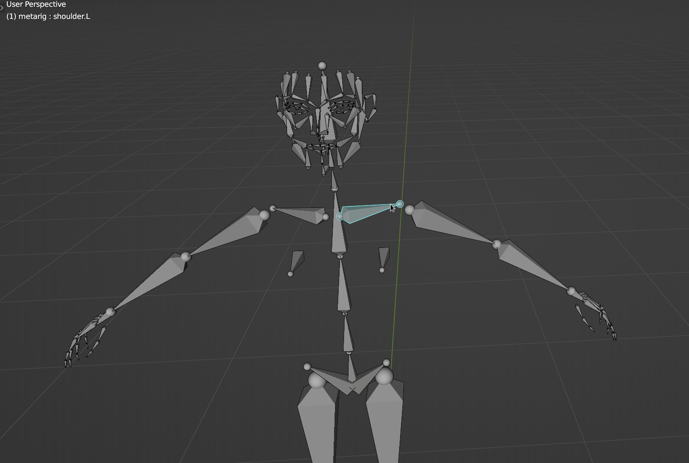

Overview
Bonera is an addon that provide a Set of Tool to Help to speed up the tedious part that is in the Manual Rigging Process.
The addon turned some of the more repetitive operator that sometimes solves using Simple Python script packed into a Toolkit Addon.
Instead of a full rigging system, Bonera seeks to be the “Wrench and Screwdrivers” of your rigging process. Can be Useful if you have a wierdly specific things need to be done that is related in rigging.
More Tool might be added to this addon if there are request to it.
Sections
Bonera is Separated Into 4 different Sections and Panels.
Preferences
You can Disable or Enable any of them in Preferences
Highlights
Speed Up Hardsurface Rigging Workflow
When dealing with Hardsurface Rigging, often time one needs to deal with multiple objects.Creating Bones and Adding the Object’s Vertex to Vertex Group can be a really Time Consuming Process


By Using the Bone Chain From Object Hierarchy Operator in Object Mode, You can set up bones quickly, especially for Hardsurface Model
Quickly Rig Curve Related Object
Curve Object are often used for things such as Hair, Grass, Ropes, Wires or any tube like items, While it is a very useful thing, rigging a rope involving Hooking Curve Points One By One, this can be very time consuming, and so this addon can help speed up this process
You Can Create the Bone in a Chain Like Manner

Apply Bone Shape
Creating Bone Shape can be a Tedious Process, But most of the time, People Uses some a set of commonly used shape, You can use Premade Bone Shape and Apply to Bones Speeding things Up. You can Even add your Own Bone Shape by Adding your Own Widget in AddonDirectory/Bonera/Widget/Widget.blend, the added bone shape will be at the same place as the bone, so you can alter the shape however you like after
